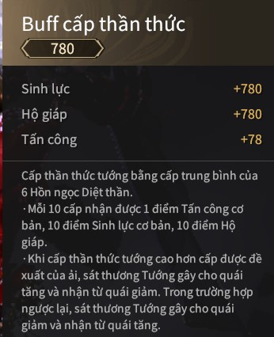

Giới thiệu
-
I. Thần thức
1.1. Sơ lược về thần thức
- Thần thức sẽ tăng các chỉ số cơ bản và sẽ khiến bạn không bị trạng thái Áp chế thần thức
- Áp chế thần thức: quái đánh bạn đau hơn, bạn đánh quái gây
ít sát thương hơn
- Cấp thần thức tối đa mùa giải Biến ảo là 780

1.2. Nâng cấp thần thức
- Người mới chơi sẽ bắt đầu với thần thức level 450
- Lúc này các bạn nên đi mở khóa các ải để có thêm ngọc và tăng cấp thần thức. Đi ải các chương theo thứ tự các độ khó từ thường đến ác mộng
- Nếu bạn đi không nổi hoặc chưa quen cách chơi thì có thể nhờ người kéo để mở map :
-
II. Nâng cấp thần thức